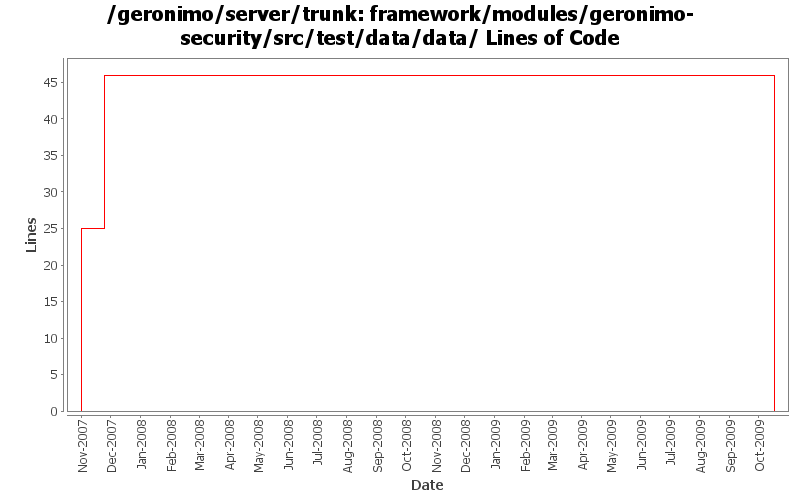

[root]/framework/modules/geronimo-security/src/test/data/data

| Author | Changes | Lines of Code | Lines per Change |
|---|---|---|---|
| Totals | 6 (100.0%) | 92 (100.0%) | 15.3 |
| vamsic007 | 2 (33.3%) | 46 (50.0%) | 23.0 |
| djencks | 4 (66.7%) | 46 (50.0%) | 11.5 |
GERONIMO-4916 step 2 move sandbox osgi framework into trunk
46 lines of code changed in 2 files:
GERONIMO-4916 step 1 remove old framwork
0 lines of code changed in 2 files:
GERONIMO-3629 Review GeronimoPropertiesFileMappedPasswordCredentialLoginModule
o logout() should remove credentials from the subject.
o logout() should destroy credentials when the subject is read-only.
o Changes to bring GeronimoPropertiesFileMappedPasswordCredentialLoginModule in line with http://java.sun.com/j2se/1.5.0/docs/guide/security/jaas/JAASLMDevGuide.html
**: This commit can use a thorough review.
21 lines of code changed in 1 file:
GERONIMO-3575 Review CertificatePropertiesFileLoginModule
o Added tests to check normal login and bad logins
25 lines of code changed in 1 file: